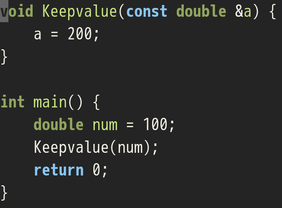
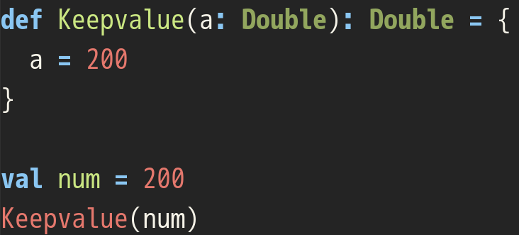
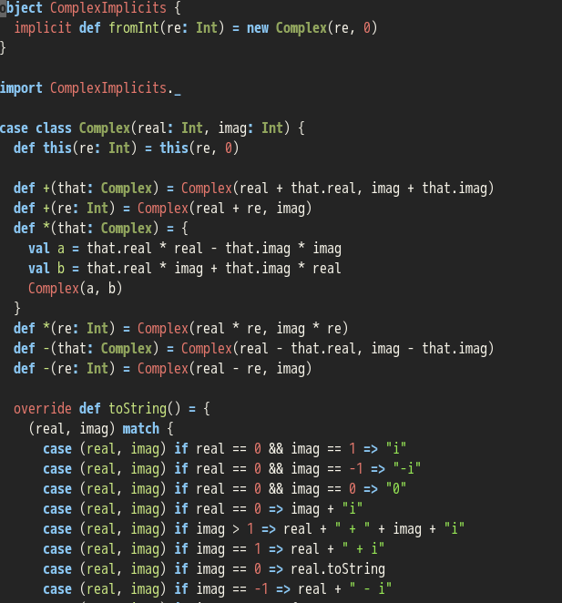

Your browser doesn't support the features required by impress.js, so you are presented with a simplified version of this presentation.
For the best experience please use the latest Chrome, Safari or Firefox browser.
カチコミ！ C++篇 @shigemk2

@shigemk2と申します。
ふだんはScalaとかシェル芸とかExcelとかSQLとか
C++知らないし、やったことないから、C++ちょっと勉強してみた
あと、Scalaの会社にいるので、ちょっとScalaと比較してみる
文字列で学ぶC++入門
http://qiita.com/7shi/items/cac7b3e9b90bf91b00cc
C++の絵本
これでC++をごにょごにょして、分からなかったところをつらつら発表してみる
参照

ポインタと参照の違い
参照は、値を取り出すのにデリファレンスが必要ないポインタ
変数に別名
参照は、値を取り出すのにデリファレンスが必要ないポインタ
変数に別名
大事なことなので(ry
なんのことなのか
わからんので逆アセンブルしてみる

g++ -O -fomit-frame-pointer -m64 -c -g param.cpp
objdump -S param.o -M intel > param.o.objdump
結果

バイナリレベルでいったら、参照もポインタも一緒やったんや
実装がちゃうだけで参照はデリファレンスを省略するためのポインタの別形態ともいえる
const参照
C++だとこうじゃろ?

Scalaだとこうじゃ
ポインタがないからvalで代用してる
でもあんまりconstと変わらないかも

コンストラクタまわり
Scalaだとこうじゃろ?

C++だとこうじゃ
C++だとコンストラクタやデストラクタを実装しないといけない
RAII的なアレ
C++だとメモリの確保にコードを各必要があった(new/delete)
メンバ変数をRAIIに任せればデストラクタ不要
ヒープインスタンスが作られる
後者を片付けるGC、GCのタイミングが予想できないとファイナライザが呼ばれるタイミングが予測できない
複素数
Scalaだとこうじゃろ?

C++だとこうじゃ
実装しんどい
課題
Scalaを知るにはJVMを知らなければならない
コンストラクタとデストラクタとファイナライザの違い
まとめ
他の言語だと実装しなくていいところを意識して実装しないといけないのはちょっとつらい
アドレス操作がわかりにくい
実装レベルだとある程度同じことが出来るので、他言語との比較はもっと低レイヤーでやらないとダメな気がした
最後に
なんかマサカリください